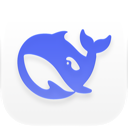

600 × 600 无边框窗，三页 × 明暗两套。此页是设计闸门：NSIS 侧按下面的规格表自绘（owner-draw + GDI+）。

为当前用户安装，无需管理员权限。安装包已内置运行所需的一切，卸载时一并清理。
正在校验安装包完整性…
已安装到 C:\Users\mutou\AppData\Local\DSHDesktopBun。开始菜单与桌面快捷方式已就绪。
颜色是编译期常量（SetCtlColors / GdipCreateSolidFill 都不吃变量）；坐标写 96 DPI 逻辑像素，落位一律 MulDiv(v, $DshDpi, 96)。
| 元素 | 尺寸 / 圆角 | 深色 | 浅色 | 字体 | 自绘方式 |
|---|---|---|---|---|---|
| 窗口 | 600 × 600 | #141417 / #FFFFFF | — | 无边框 + SetWindowPos(0x34)；圆角需 SetWindowSubclass ⇒ 真机方窗，内容留 1px 边 | |
| 标题栏 | h 44 · 拖动区整条 | 文字 #7C828B / #868C96 | 12.5 / 400 | 空 label + SS_NOTIFY 拖动；两个 28×28 按钮 owner-draw | |
| 品牌瓦片 | 44 × 44 · r12 | 底 #1E1E23 / #F3F4F7，1px #2C2C33 / #E3E5EA | — | bitmap（whale.png 32×32 居中） | |
| 标题 H1 | 26 / 650 · 行高 1.25 | #F2F3F5 / #0F1115 | Microsoft YaHei UI | 透明 static（SetCtlColors text+bg）或 GDI+ 直绘页面 | |
| 正文 | 13 / 400 · 行高 1.65 | #A7ACB4 / #5A6069 | 同上 | 同上 | |
| 卡片 | r14 · padding 16 · 1px | 底 #1E1E23 / #F3F4F7，边 #2C2C33 / #E3E5EA | — | GDI+ GdipCreatePath + AddPathArcI 圆角矩形 | |
| 路径框 | h 40 · r10 | 底 #1B1B1F / #F7F8FA，边 #2C2C33 / #E3E5EA | 12.5 / 400 | 原生 edit（无边框 + SetCtlColors）或只读 static + 自绘光标 | |
| 次按钮 | h 40 · r10 · padding 16 | 边 #3A3A43 / #D2D6DE，hover 底 #26262C / #E7E9EE | 12.5 / 500 | owner-draw（NM_CUSTOMDRAW），三态：常态 / hover / pressed | |
| 主按钮 | h 48 · r12 · 全宽 | #4D6BFE，hover #3D5BEE，pressed #3350D8，禁用 #26262C / #E7E9EE | 15 / 600 | owner-draw + GDI+ 圆角填充 + 阴影（叠一层 alpha 描边） | |
| 文本按钮 | h 32 · r8 | #7C828B / #868C96，hover #A7ACB4 / #5A6069 | 12.5 / 400 | owner-draw（无边框） | |
| 进度条 | h 8 · r999 | 轨道 #26262C / #E7E9EE，填充 #4D6BFE → #6E86FF | — | GDI+ 直绘到 static 的 DC（GetDC → GdipFillRectangle → ReleaseDC） | |
| 步骤行 | h 36 · r10 · 图标 18 | 完成 #4D6BFE 实心，当前描边转圈，待办 #3A3A43 / #D2D6DE | 12.5 / 400 | 图标 + 文本两次 GDI+ 绘制；转圈用 ${NSD_CreateTimer} 换帧 | |
| 开关 | 44 × 24 · 滑块 18 | 开 #4D6BFE，关 #26262C / #E7E9EE | 13 / 400 | 自绘复选框（drawing.nsh 同款）+ 自绘滑块 | |
| 完成标记 | 64 圆 · 勾 30 | 底 rgba(77,107,254,.12)，勾 #4D6BFE | — | GDI+ 圆 + 折线（GdipDrawLinesI） | |
NM_CUSTOMDRAW 回调里画，官方 pages.nsh InstallerPaintButton 同款
GDI+：gdiplus::Gdip* 系统 DLL，零新增依赖
bitmap：打包期生成资源，File /oname=$PLUGINSDIR\… 释放
待定位（真机截图上出现的问题）：① 品牌图整块没渲染出来（${NSD_SetStretchedImage} / 2x 切换 / File 释放哪一环断）；② 文字 label 后面有灰底（SetCtlColors 的底色没对上页面底色）；③ push button / edit / static 全是 Windows 原生 3D 样式。这三条都要在本原型对应的实现票里消掉。